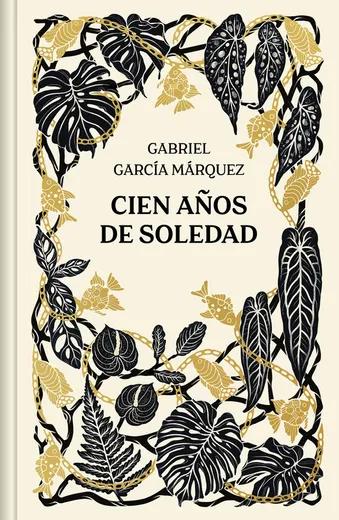
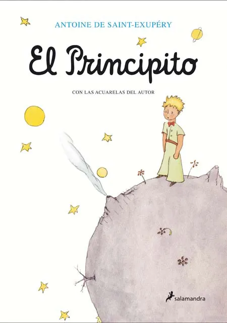
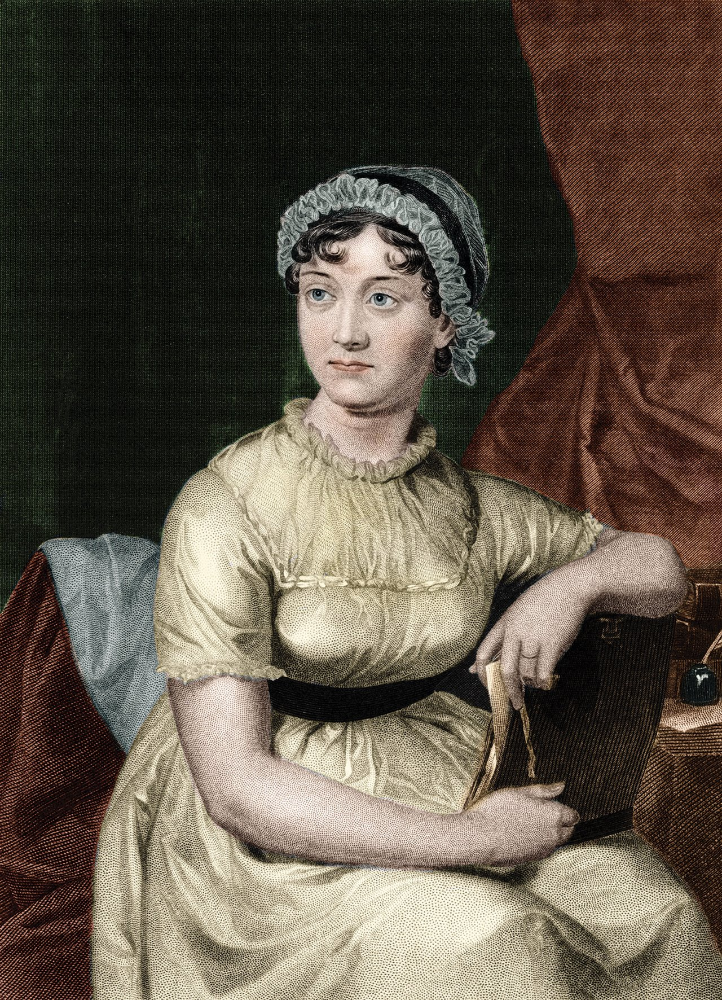

Bienvenido a El Universo Literario de Antares
Explora un mundo lleno de historias fascinantes, autores increíbles y recomendaciones que te inspirarán a sumergirte en la lectura.
Noticias Literarias
Libros Destacados

Cien años de soledad
Gabriel García Márquez
Una obra maestra del realismo mágico que narra la historia de la familia Buendía en Macondo.
1984
George Orwell
Una distopía clásica que explora temas de vigilancia, control y libertad.

El Principito
Antoine de Saint-Exupéry
Un cuento filosófico y poético que ha conquistado a lectores de todas las edades.
Autores Destacados

Gabriel García Márquez
Premio Nobel de Literatura y maestro del realismo mágico.

Jane Austen
Autora clásica conocida por sus novelas de crítica social y romance.
J.K. Rowling
Creadora de la saga de Harry Potter, un fenómeno literario mundial.
Reseñas Recientes
Reseña de "Cien años de soledad"
Una obra que te transporta a un mundo mágico y te hace reflexionar sobre la soledad y el tiempo.
Calificación: ⭐⭐⭐⭐⭐
Reseña de "1984"
Una novela perturbadora pero necesaria que sigue siendo relevante en la actualidad.
Calificación: ⭐⭐⭐⭐
Reseña de "El Principito"
Un libro que todos deberían leer al menos una vez en la vida. Lleno de sabiduría y ternura.
Calificación: ⭐⭐⭐⭐⭐